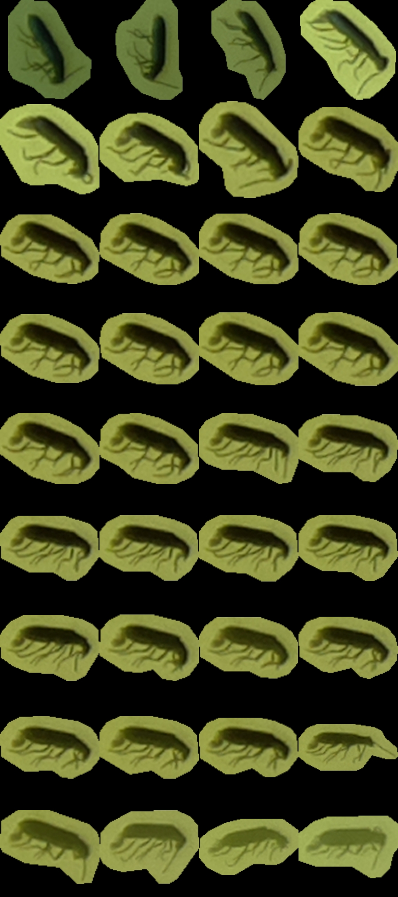

Chapter 7 Machine Learning
This page describes how to annotate, train and use the machine learning model of the Sticky Pi project. This step does require some familiarity with scientific computing (e.g. Unix/Linux, python. Here, we complement the descriptions of the algorithms provided in the Sticky Pi manuscript with a practical documentation on how to use and adapt them. We are open for collaboration regarding training, building and extending Machine Learning models, so do not hesitate to contact us. For simplicity, we describe how to use the ML tools independently of the API (which is set to store and query images/annotations on a remote or a local machine). For production, with multiple concurrent Sticky Pi devices, we recommend using the API.
General description
Briefly, we start from a series of images (every 20min, for several days) of a sticky card. Our ultimate goal is to tell which, and when insects were captured. We break down this task in three independent steps:
- Universal Insect Detector – We perform an instance segmentation on all images independently. This extracts insects (foreground) from the background. Importantly, at this stage, we do not yet classify insects.
- Siamese Insect Matcher – Captured insects actually may move, degrade, become occluded… Therefore, in practice, classification and timing of capture from single images would be very inconsistent through time. Instead, we first track insects before classifying them. The function of the Siamese Insect Matcher is to track multiple insect instances through their respective timelapses.
- Insect Tuboid Classifier – After tracking, each insect in the time series is represented by a variable number of standardized segmented shots as well as metadata (including size) – which we call a “tuboid”. The Insect Tuboid Classifier infers a taxonomy to each tuboid based on multiple images.
Below, we describe how to implement each step. The model files and datasets used in the publication are available on Zenodo. Our source code is publicly available on github.
General Prerequisites
Installation
We recommend starting by setting a Python virtual environment for the entire project. And using the python package manager (pip).
Detectron2, PyTorch and PyTorch Vision
In your virtual environment, you want to manually install detectron2, which requires matching PyTorch and Torchvision. This has to be done manually since it depends on your platform/hardware (e.g. GPU support).
For instance, on a Linux machine without CUDA (so, no GPU support), from the pytorch website:
# installing precompiled PyTorch and Torchvision (from at https://pytorch.org/)
pip3 install torch torchvision torchaudio --extra-index-url https://download.pytorch.org/whl/cpu
# then building detectron2 from source
# you could also use prebuilt versions
pip3 install 'git+https://github.com/facebookresearch/detectron2.git'Note, to make the most of CNNs and PyTorch, you likely want to have hardware support (i.e. a GPU). Running models on a CPU is mostly for testing and development, and may be very slow (in particular for training).
Project organisation
In the Sticky Pi project, the resources for each of the three algorithms described above (i.e. UID, SIM and ITC) are stored and organised in a “Machine Learning (ML) bundle”. An ML bundle is a directory that contains everything needed to train, validate and use a tool. ML bundles all contain the subdirectories:
config– one or several.yamlconfiguration filesdata– the training and validation dataoutput– the trained model (i.e..pthfiles). The filemodel_final.pthbeing the working model used for inference.
Universal Insect Detector
The goal of (Universal Insect Detector) UID is to find and segment all individual insects from arbitrary sticky card images.
As part of the sticky-pi-ml package, we have made a standalone tool version of the UID, standalone_uid.py (see standalone_uid.py --help).
From within your virtual environment, you can use this tool (it should be in your path after installation) to segment images as well as re-train and validate the model on your own data.
We can start by downloading the whole ML Bundle from Zenodo (that can take a while as we are getting both the model and the data):
wget https://zenodo.org/record/6382496/files/universal-insect-detector.zip
unzip universal-insect-detector.zip
# show what is inside this new directory
ls universal-insect-detectorOur bundle directory is therefore universal-insect-detector.
Inference
For inference with the standalone tool, all images should be .jpg stored in a directory structure.
For this example, you could download a sample of three images we have put together for this tutorial.
Or just use the download link
Then, we can use our custom script standalone_uid.py to “predict” – i.e. segment the images:
# We use the uid tool to predict, based on a model located in the bundle `./universal-insect-detector` (--bundle-dir)
# We find all `.jpg` files in the target directory `./uid_tutorial` (--target)
# We set the verbose on (-v)
standalone_uid.py predict_dir --bundle-dir ./universal-insect-detector \
--target ./uid_tutorial -v
# list the generated resulting files
ls ./uid_tutorial/*.svgAs a result, the uid tool makes an SVG image for each JPG.
The SVG contains a path for each detected instance.
You can directly open the SVG files to check.
By default, the inference tool does not overwrite existing SVG, unless you use the --force flag.
Training
Data source
In order to train the model, you need to populate the universal-insect-detector/data/.
For the UID, the input files are SVGs exactly like the ones outputted by the inference tool (i.e. a JPG image is embedded and each insect is a path).
You can either add new data to the existing collection of SVGs already present in universal-insect-detector/data,
or rebuild your own new set (though the later option would be rather labour-intensive).
A simple way to get started, is to run inference on your new images (as describe just above), and fix/check the resulting SVGs by hand.
Alternatively, you use the --de-novo option along with --predict-dir to just wrap your images in an empty SVG.
To edit the SVG, we recommend using inkscape.
The default is that every insect is a simple, closed, path/polygon (e.g. made with the Bezier curve tool).
The stroke colour of the path defines the class of the object (the filling colour does not matter).
The default stroke colour for insects is in blue #0000FF (This is defined in the configuration file. Any other colour will not be recognised as an insect):
Configuration
There are two configuration files for the UID:
mask_rcnn_R_101_C4_3x.yaml– the configuration for Mask-RCNN as defined in thedetectron2documentation. This is the underlying segmentation algorithm we use.config.yaml– The specific configuration for the Sticky Pi project (which may override some of themask_rcnn_R_101_C4_3x.yamlconfiguration). See inline comments for detail.
The important configuration variables are likely going to be in the SOLVER section:
IMS_PER_BATCH– the number of images in a training bash. The larger this number, the more memory will be used during training. This will depend on your GPU capabilities.BASE_LR– The starting learning rateGAMMA– The decay rate of the learning rate, at every ‘step’STEPS– The training steps, in number of iterations. at each step, the learning rate will decrease (by a factorGAMMA)
Data integrity
Before training, you most likely want to check your data can indeed be loaded and parsed.
Carefully read the warnings, in particular if they hint that the SVG paths are malformed.
Training
The training itself can be very long (e.g. several days on a GPU can be expected). Likely, you have access to specialised hardware and support to do that. Once you have set the configuration, checked the input data, etc, you can use the standalone UID tool to make a new model.
The script will output information about the dataset and print a summary every 20 iterations (by default).
Each summary contains information such as total_loss, which should eventually decrease (this is described in the detectron2 documentation).
Every 5000 iterations (defined in the configuration as SOLVER/CHECKPOINT_PERIOD), a snapshot of the ongoing model will be generated as universal-insect-detector/output/model_XXXXXX.pth, where XXXXXX is the iteration number.
Unless you have reached the maximal number of iterations, you will need to manually copy your latest snapshot into the final working model universal-insect-detector/output/model_final.pth.
You could use the intermediary snapshots to perform custom validation, or eventually remove them.
If you want to train the model from “scratch”, use the --restart_training flag.
This will actually use Mask-RCNN model that was pretrained on the COCO dataset (training from zero would take much longer).
Validation
An important step is validation. By default, each original image is allocated to either a validation (25%) or training (75%) dataset. This is based on the checksum of the JPG image, so it is pseudorandom. To compute validation statistics on 25% of the images that were “randomly” excluded from training, you can run:
standalone_uid.py validate --bundle-dir ./universal-insect-detector \
--target validation_results -vThis will run an inference on the validation set which has not been seen during training, create a resulting SVG files and issue summary statistics for each validation image (all in the target directory validation_results/).
In particular, there will be a resulting JSON file results.json, which contains a list where each element is a detected instance. Each instance has the fields:
area– the number of pixels in the instancein_gt– whether the instance is in the ground truthin_im– whether the instance is in the detected imageclass– the class (i.e.insect)filename– the SVG file where the image is from
You can then parse this file (e.g. in R) to compute summary statistics:
library(data.table)
library(jsonlite)
dt <- as.data.table(jsonlite::fromJSON('results.json'))
dt[, .(precision = sum(in_gt & in_im)/ sum(in_im),
recall = sum(in_gt & in_im)/ sum(in_gt)),
]You can also compare the validation images (SVG) generated in the target directory (validation_results/).
Each path is a detected instance. The ones filled with red (#ff0000) are detected by the UID, whilst the blue (#0000ff) ones are the ground truth.
I find it convenient to open images in inkscape and select, say a UID-generated path, right click and press “select same/fill and stroke” to then change the stroke style and colour to visualise better:
Siamese Insect Matcher
The Siamese Insect Matcher is the second step of the analysis.
We start from a series of images annotated by the UID to generate “tuboids”, which are series of shots of the same insect, over time.
To do that, we use annotated Sticky Pi images.
In the previous section, we described how to generate SVG images from JPGs in a directory.
The SIM is specific to Sticky Pi images as their timestamp is encoded in their name.
The name of each image is formatted as <device_name>.<datetime>.jpg.
We also have a standalone tool to use the SIM standalone_sim.py (see standalone_sim.py --help).
We can start by downloading the whole ML Bundle from Zenodo (that can take a while as we are getting both the model and the data):
wget https://zenodo.org/record/6382496/files/siamese-insect-matcher.zip
unzip siamese-insect-matcher.zip
# show what is inside this new directory
ls siamese-insect-matcherInference
For this documentation, we have made available a small series of 50 pre-annotated images.
First we download the images:
Or just use the download link.
Using the standalone tool, you can then generate tuboids:
This should show progress and processing information.
As a result, you will find a directory named tuboids in --target (i.e. ./sim_tutorial), with the following structure:
tuboids/
└── 15e612cd.2020-07-08_22-05-10.2020-07-09_13-27-20.1611328841-264f9489eac5c0966ef34ff59998084f
├── 15e612cd.2020-07-08_22-05-10.2020-07-09_13-27-20.1611328841-264f9489eac5c0966ef34ff59998084f.0000
│ ├── context.jpg
│ ├── metadata.txt
│ └── tuboid.jpg
├── 15e612cd.2020-07-08_22-05-10.2020-07-09_13-27-20.1611328841-264f9489eac5c0966ef34ff59998084f.0001
│ ├── context.jpg
│ ├── metadata.txt
│ └── tuboid.jpg
.....................
SKIPPING DIRECTORY WITH SIMILAR STRUCTURE
.....................
├── 15e612cd.2020-07-08_22-05-10.2020-07-09_13-27-20.1611328841-264f9489eac5c0966ef34ff59998084f.0019
│ ├── context.jpg
│ ├── metadata.txt
│ └── tuboid.jpg
└── 15e612cd.2020-07-08_22-05-10.2020-07-09_13-27-20.mp4The parent directory, 15e612cd.2020-07-08_22-05-10.2020-07-09_13-27-20.1611328841-264f9489eac5c0966ef34ff59998084f, is formatted as: <device_id>.<start_datetime>.<end-datetime>.<algorithm_unique_id>.
The children directories are unique identifiers of each tuboid in this specific series (ending in .0000, .0001, .0002, …).
Inside each tuboid directory, there are three files:
metadata.txt– a small file describing each insect (parent image, x and y position, and scale)tuboid.jpg– a JPG file where shots listed in metadata are represented as contiguous tiles. The file is padded with empty space when necessarycontext.jpg– a compressed version of the first image containing the insect, where the insect is boxed (to show where and how large it is). This is mostly to give some context to the annotating team.
You will also find a video (15e612cd.2020-07-08_22-05-10.2020-07-09_13-27-20.mp4):
Note that each tuboid is shown by a rectangle with a number matching the unique identifier of a tuboid.
This video can help you find a specific tuboid in the tuboids directory structure.
For instance, tuboid number 12 looks like this:
 Also, the UTC date and time are written on top of the video.
Training
The core algorithm of the Siamese Insect Matcher is a Siamese neural network. It compares insects from consecutive pictures and learns to discriminate between the same instance vs. another insect. The data to train this network is a set of paired UID-annotated images, where insects that are the same instances are labeled as a group. In practice, these are encoded as composite SVG images with the two images vertically stacked, and the instances labeled as an SVG group.
Rather than manually generating a training set, we can use the standalone tool to generate candidates for us that we can then just amend:
The argument --filter 5 keep only every fifth image, and skip the others.
By default, this process will pre-group pairs of contours that highly overlap between consecutive images (based on their IoU only).
This should save a lot of time as most of these should be simple cases.
This tool also draws a line to highlight paired groups.
The line is simply a visual tool to help annotation and can be left as is:
Using inkscape, you can group pairs using a shortcut like CTRL+G.
We recommend using the XML editor (the panel on the right) to check that the grouping is correct, and find unmatched instances.
Keep in mind that not all instances can / should be matched.
Indeed, some insects may be mislabeled in the first place, or may have escaped, appeared, …
It is unnecessary (and probably counterproductive) to try to manually fix the segmentation (i.e. the UID) by adding or deleting new instance annotations (paths).
As before, you can either make your own data set, or just extend the existing SIM data bundle (the latter is recommended).
For the training itself, we can run:
On a machine with CUDA, you should use the --gpu flag.
Also you can use the --restart-training flag to restart from scratch rather than use the previous weights.
The training involves two preliminary stages that independently train separate branches of the network followed by a longer third (final) stage that trains the whole network.
Every 200 rounds (default), the model takes a snapshot (i.e. saves the weights) in siamese-insect-matcher/output/model_XXXXXX.pth.
You can also manually the any .pth file as model_final.pth to specifically use this model during inference
Validation
Like for the UID, each original image is allocated to either a validation (25%) or a training (75%) dataset based on a checksum. Validation is automatically computed to generate a loss and accuracy when the training reaches a checkpoint (by default, every 200 rounds). One can also specifically run validation:
standalone_sim.py validate --bundle-dir ./siamese-insect-matcher \
--target ./sim_tutorial/validation/ -vThis will generate a json file ./sim_tutorial/validation/results.json, which is a list of dictionaries
with fields pred (predicted score) and gt (ground truth, i.e. 0 or 1).
pred is the raw match score (between 0 and 1), so one can use this result file to vary the match threshold and make an ROC curve.
E.g. to make a ROC curve in R:
Insect Tuboid Classifier
The Insect Tuboid Classifier (ITC) is the last step of the analysis. Its goal is to infer taxonomy from tuboids (several shot of an insect). It is an adapted ResNet architecture that: takes multiple images as input, averages them on the feature space, and outputs one prediction. This algorithm also uses the initial pixel-size of the insect, which is contained in the tuboid metadata. As opposed the other two generalist algorithms, the ITC will need to be retrained for specific contexts (location, season, …). Therefore, we will first describe how to train the algorithm.
Training
Ground-truth data
The previous algorithm (SIM) generated “tuboids”, each of which corresponds to a unique insect. These are uniquely identified directories. The goal of the annotation is to associate a taxonomy to a set of reference tuboids. In order to facilitate annotation of many tuboid, we have made an open source multi-user web tool. Taxonomy is the hardest task, so multiple experts might be involved.
In order to use the annotation tool, two steps are required:
- Set up an S3 bucket that contains the tuboid data.
- Configure and deploy our docker service
Upload data on an S3 server
S3 servers are a standard cloud solution for hosting and serving large amounts of data on the cloud. There are different providers and tools to interface S3 server. Here, we show how to do that with s3cmd.
First, we make a new bucket:
Then, we upload the local tuboid data.
We assume, you have a directory ($TUBOID_DATA_DIR) with the tuboid data.
This would be typically a subdirectory named tuboids in the --target directory you set when using the SIM for inference.
To practice, you can use tutorial data we have put together for the ITC:
Or just use the download link
TUBOID_DATA_DIR=itc_tutorial/data # or REPLACE_WITH_YOUR_PATH
# this send the local data on the remote s3 server
s3cmd sync ${TUBOID_DATA_DIR}/ s3://${S3_BUCKET}Obviously, check that files are being uploaded. We also pre-generate an index file that list all the tuboids.
TMP_DIR=$(mktemp -d)
echo 'tuboid_id, tuboid_dir' > ${TMP_DIR}/index.csv
# this loop generates the index file
for i in $( s3cmd ls s3://${S3_BUCKET}/ --recursive | \
grep metadata\.txt | \
cut -d : -f 3 | \ cut -c2-);
do echo $(basename $(dirname $i)), $(dirname $(realpath --relative-to="/${S3_BUCKET}" $i -m)) \
>> ${TMP_DIR}/index.csv;
done
# for each tuboid, 3 files are uploaded (`metadata.txt`, `tuboid.jpg` and `context.jpg`)
head ${TMP_DIR}/index.csv # just to take a look at the index file
wc -l ${TMP_DIR}/index.csv # the number of line should be the number of tuboids +1 (for the header)
s3cmd put ${TMP_DIR}/index.csv s3://${S3_BUCKET} && rm ${TMP_DIR} -rOn your s3 service provider, generate an access key specifically for the docker service. Ideally, the access key pair is read only and only has access to the bucket you just created. Do not share the private key, but keep it as you will need it to configure the docker service.
Set up the docker service
Docker is an industry standard container service. It allows you to run a virtualised self-contained service on top of a host machine. You can set docker on your machine, a local or a remote server. There are also a range of commercial docker hosting platform.
To run our docker container, first create a local environment file to store your variables, including s3 credentials, for instance .secret.env (ensure this file has the appropriate access set; i.e. only you/ the administrator should be able to read this file).
In .secret.env, we can edit the environment variables according to the comment:
export S3_HOST=some.host.com # The host of the bucket e.g. `location.
export S3_BUCKET=my-bucket-name # the name of the s3 bucket. ame as above
export S3_PRIVATE_KEY=abcdefgh # The private key for this service (see above)
export S3_ACCESS_KEY=ABCDEF # The access key for this service (see above)
export PORT=80 # The network port on the host on which the service will be available (80 for http)
export LOCAL_VOLUME=/my/local/storage # A local dirctory on the host that contain the service's data (e.g. the results)Then to run the container, you can do:
source ./.secret.env
docker run --rm --publish ${PORT}:80 \
--name tuboid-annotation-tool \
--env S3_BUCKET=${S3_BUCKET} \
--env S3_HOST=${S3_HOST} \
--env S3_ACCESS_KEY=${S3_ACCESS_KEY} \
--env S3_PRIVATE_KEY=${S3_PRIVATE_KEY} \
--volume ${LOCAL_VOLUME}:/opt/data_root_dir \
-d stickypi/tuboid-annotation-tool:latestThe first time, this will download the image from the dockerhub, where we have stored a copy of the prebuilt docker image.
For this simple application, we just use plaintext credentials as a json file, credentials.json, in LOCAL_VOLUME.
For instance, in ${LOCAL_VOLUME}/credentials.json, yo0u could have:
{
"user1" : {"password": "password1", "allow_write": 1},
"user2" : {"password": "password2", "allow_write": 0}
}This creates two users, user1 and user2, with passwords, password1 and password2, respectively.
allow_write=1 means the user (user1) has write access. user2 can only view images, but cannot annotate.
If you run the annotation tool on your local computer, you should be able to access it on http://localhost:<PORT>, where <PORT> is the port you defined in your configuration file.
This video shows how you can use the tool to annotate tuboid images and export the data:
Training the algorithm
Once you have annotated your data, you can retrieve database.db file from the annotation web tool.
You will need to put this file in the data subdirectory of your bundle directory.
If you have used the tutorial bundle, it should look like that:
├── config
│ └── config.yaml
└── data
├── database.db
├── 0a5bb6f4.2020-07-08_22-00-00.2020-07-15_12-00-00.1607154774-d74d75f50086077dbab6b1dce8c02694
│ └── 0a5bb6f4.2020-07-08_22-00-00.2020-07-15_12-00-00.1607154774-d74d75f50086077dbab6b1dce8c02694.0000
│ ├── context.jpg
│ ├── metadata.txt
│ └── tuboid.jpg
├── 15e612cd.2020-07-01_22-00-00.2020-07-08_12-00-00.1607154774-d74d75f50086077dbab6b1dce8c02694
│ ├── 15e612cd.2020-07-01_22-00-00.2020-07-08_12-00-00.1607154774-d74d75f50086077dbab6b1dce8c02694.0000
│ │ ├── context.jpg
│ │ ├── metadata.txt
│ │ └── tuboid.jpg
.....................
SKIPPING DIRECTORY WITH SIMILAR STRUCTURE
.....................As for the two other tools, we have built a standalone executable for the ITC.
Given itc_tutorial/ is your bundle dir, you can then train the model using:
This will start training the model from scratch and output validation statistics and confusion matrices at every checkpoint.
As a functional example, you can download and train the model we used for the manuscript: We can start by downloading the whole ML Bundle from Zenodo (that can take a while as we are getting both the model and the data):
wget https://zenodo.org/record/6382496/files/insect-tuboid-classifier.zip
unzip insect-tuboid-classifier.zip
# show what is inside this new directory
ls insect-tuboid-classifierImportantly, you need to adapt the configuration file config.yaml to your scenario.
In particular, in this model, we define flat labels from taxonomy, using regular expressions.
The taxonomical levels are: type, order,family,genus,species, and extra (extra could be other information such as sex and morph).
Labels are defined as [regex, number], in config.yaml:
LABELS:
- ['^Background.*',0]
- ['^Insecta\.Hemiptera\.Cicadellidae\.Edwardsiana.*', null]
- ['^Insecta\.Hemiptera\.Cicadellidae.*', null]
- ['^Insecta\.Diptera\.Drosophilidae\.Drosophila\.Drosophila suzukii.*', null]
- ['^Insecta\.Diptera\.Drosophilidae.*', null]
- ['^Insecta\.Diptera\.Psychodidae.*', null]
- ['^Insecta\.Diptera\.Culicidae.*', null]
- ['^Insecta\.Diptera\.Muscidae.*',null]
- ['^Insecta\.Diptera\.Sciaridae.*', null]
- ['^Insecta\.Diptera\.Syrphidae.*', null]
- ['^Insecta\.Coleoptera\.Curculionidae.*',null]
- ['^Insecta\.Coleoptera\.Coccinellidae.*',null]
- ['^Insecta\.Coleoptera\.Elateridae.*',null]
- ['^Insecta\.Coleoptera.*',null]
- ['^Insecta\.Hymenoptera\.Figitidae.*', null]
- ['^Insecta\.Hymenoptera\.Halictidae.*',null]
- ['^Insecta\.Lepidoptera.*', null]
- ['^Insecta.*',1]
regex is a regular expression matching the taxonomy. All taxonomic levels are collapsed in a single sting separated by ..
For instance, Drosophila suzukii is defined as ^Insecta\.Diptera\.Drosophilidae\.Drosophila\.Drosophila suzukii.*
number is an integer >=0, for this label. If null, the labels automatically take the next available value. (here we set background and undefined insects as 0 and 1, respectively).
Since multiple labels may match an annotation, the order of definition of labels matter. A given annotation will take the value of the first matched label.
For instance, if we have an annotation that is Insecta\.Coleoptera\.Elateridae.abcd.efg, it matches both ^Insecta\.Coleoptera\.Elateridae.* and ^Insecta\.Coleoptera.*.
Since ^Insecta\.Coleoptera\.Elateridae.*, comes first, we keep it as a label.
Inference
Since we already have a functional model for the manuscript data, we can use it to demonstrate how the inference works.
Given you store the ML bundle for the ITC in insect-tuboid-classifier/
we could run inference, using this model, on its own data --target insect-tuboid-classifier/data.
standalone_itc.py predict_dir --bundle-dir insect-tuboid-classifier --target insect-tuboid-classifier/data -vThis will generate a CSV file, insect-tuboid-classifier/data/results.csv" with column names describing the taxonomy and the name/origin of unique tuboids in the column directory.